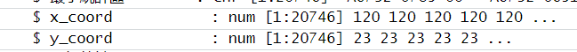
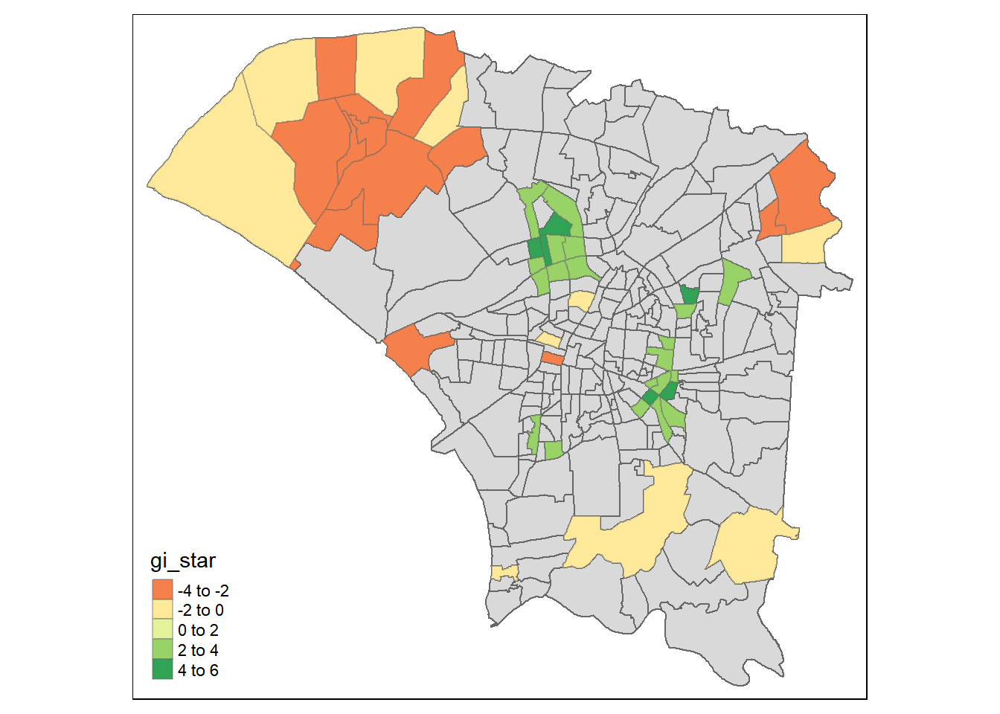

pacman::p_load(sf, spded, sfdep, tmap, tidyverse, plotly, Kendall)Take-home Exercise 2: Application of Spatial and Spatio-temporal Analysis Methods to Discover the Distribution of Dengue Fever in Tainan City, Taiwan
Setting the Scene
Dengue Hemorrhagic Fever (in short dengue fever) is one of the most widespread mosquito-borne diseases in the most tropical and subtropical regions. It is an acute disease caused by dengue virus infection which is transmitted by female Aedes aegypti and Aedes albopictus mosquitoes. In 2015, Taiwan had recorded the most severe dengue fever outbreak with more than 43,000 dengue cases and 228 deaths. Since then, the annual reported dengue fever cases were maintained at the level of not more than 200 cases. However, in 2023, Taiwan recorded 26703 dengue fever cases.
Objectives
In this exercise, we are curious to find out:
if the distribution of dengue fever outbreak at Tainan City, Taiwan are independent from space and space and time.
If the outbreak is indeed spatial and spatio-temporal dependent, then, you would like to detect where are the clusters and outliers, and the emerging hot spot/cold spot areas.
The Task
The specific tasks of this take-home exercise are as follows:
Using appropriate function of sf and tidyverse, preparing the following geospatial data layer:
a study area layer in sf polygon features. It must be at village level and confined to the D01, D02, D04, D06, D07, D08, D32 and D39 counties of Tainan City, Taiwan.
a dengue fever layer within the study area in sf point features. The dengue fever cases should be confined to epidemiology week 31-50, 2023.
a derived dengue fever layer in spacetime s3 class of sfdep. It should contain, among many other useful information, a data field showing number of dengue fever cases by village and by epidemiology week.
Using the extracted data, perform global spatial autocorrelation analysis by using sfdep methods.
Using the extracted data, perform local spatial autocorrelation analysis by using sfdep methods.
Using the extracted data, perform emerging hotspot analysis by using sfdep methods.
Describe the spatial patterns revealed by the analysis above.
Data Used
| Data Set | Description | Source |
|---|---|---|
TAIWAN_VILLAGE |
Geospatial data of the village boundary of Taiwan in ESRI shapefile and in Taiwan’s Geographic Coordinate System | Historical map data of the village boundary: TWD97 longitude and latitude |
Dengue_Daily.csv |
Aspatial data of reported dengue cases in Taiwan since 1998. | Dengue Daily Confirmed Cases Since 1998 |
Installing and Loading the R packages
The R packages used in this exercise are:
sf: this packages provides an efficient framework designed for importing, managing and processing vector-based geospatial data in R
spdep will be used to compute spatial weights, global and local spatial autocorrelation statistics
tmap: provides functions for plotting cartographic quality static point patterns maps or interactive maps by using Leaflet API
tidyverse: a collection of R packages designed to facilitate and streamline the process of data analysis and manipulation in R
plotly: to create wide range of graphs and charts and enables interactive, dynamic data visualization
The following code chunk accomplishes the following objectives:
Compiles a list of essential R packages.
Verifies whether these R packages are installed.
Installs any missing packages using RStudio.
Loads the packages into the R environment for use.
Import the geospatial data
In this section, we will use st_read() to read the Taiwan boundary layer as a simple features data frame. We can convert it to other objects later on if necessary!
In the code below, dsn specifies the filepath where the dataset is located and layer provides the filename of the dataset excluding the file extension.
tainan <- st_read(dsn = "data/geospatial",
layer = "TAINAN_VILLAGE")Reading layer `TAINAN_VILLAGE' from data source
`C:\jaymieseet\IS415-GAA-JS\Take-home_Ex\Take-home_Ex02\data\geospatial'
using driver `ESRI Shapefile'
Simple feature collection with 649 features and 10 fields
Geometry type: POLYGON
Dimension: XY
Bounding box: xmin: 120.0269 ymin: 22.88751 xmax: 120.6563 ymax: 23.41374
Geodetic CRS: TWD97Geospatial Data Pre-processing
Inspecting the Projected Coordinate System
As this data is situated in Taiwan, the appropriate Geographic Coordinate System is EPSG::3824 (TWD97), which is the national Projected Coordinate System for Taiwan.
st_crs(tainan)Coordinate Reference System:
User input: TWD97
wkt:
GEOGCRS["TWD97",
DATUM["Taiwan Datum 1997",
ELLIPSOID["GRS 1980",6378137,298.257222101,
LENGTHUNIT["metre",1]]],
PRIMEM["Greenwich",0,
ANGLEUNIT["degree",0.0174532925199433]],
CS[ellipsoidal,2],
AXIS["geodetic latitude (Lat)",north,
ORDER[1],
ANGLEUNIT["degree",0.0174532925199433]],
AXIS["geodetic longitude (Lon)",east,
ORDER[2],
ANGLEUNIT["degree",0.0174532925199433]],
USAGE[
SCOPE["Horizontal component of 3D system."],
AREA["Taiwan, Republic of China - onshore and offshore - Taiwan Island, Penghu (Pescadores) Islands."],
BBOX[17.36,114.32,26.96,123.61]],
ID["EPSG",3824]]Let’s view the dataset columns with the code below.
head(tainan,1)Simple feature collection with 1 feature and 10 fields
Geometry type: POLYGON
Dimension: XY
Bounding box: xmin: 120.2695 ymin: 22.93251 xmax: 120.2905 ymax: 22.96072
Geodetic CRS: TWD97
VILLCODE COUNTYNAME TOWNNAME VILLNAME VILLENG COUNTYID COUNTYCODE
1 67000280002 臺南市 歸仁區 六甲里 Liujia Vil. D 67000
TOWNID TOWNCODE NOTE geometry
1 D33 67000280 <NA> POLYGON ((120.2725 22.95868...This dataset contains information on the towns and village names in Taiwan, which includes the village and town names, ID and codes.Each row is also tagged to a polygon geometry data.
Our analysis at the village level is confined to the D01, D02, D04, D06, D07, D08, D32 and D39 counties of Tainan City, Taiwan. Hence, let’s filter the data to only retain information of the counties we want with the code chunk below:
Create a vector
town_idscontaining the town IDs of interest, namely “D01”, “D02”, “D04”, “D06”, “D07”, “D08”, “D32”, and “D39”Create a subset of the dataframe
tainan. It selects rows where theTOWNIDcolumn matches any of the town IDs specified in thetown_idsvector. The resulting subset is stored in the variabletn_counties.
town_ids <- c("D01", "D02", "D04", "D06", "D07", "D08", "D32", "D39")
tn_counties <- subset(tainan, TOWNID %in% town_ids)
tn_countiesSimple feature collection with 258 features and 10 fields
Geometry type: POLYGON
Dimension: XY
Bounding box: xmin: 120.0627 ymin: 22.89401 xmax: 120.2925 ymax: 23.09144
Geodetic CRS: TWD97
First 10 features:
VILLCODE COUNTYNAME TOWNNAME VILLNAME VILLENG COUNTYID COUNTYCODE
2 67000350032 臺南市 安南區 青草里 Qingcao Vil. D 67000
18 67000270011 臺南市 仁德區 保安里 Bao'an Vil. D 67000
66 67000370005 臺南市 中西區 赤嵌里 Chihkan Vil. D 67000
67 67000330004 臺南市 南區 大成里 Dacheng Vil. D 67000
68 67000350028 臺南市 安南區 城北里 Chengbei Vil. D 67000
69 67000350030 臺南市 安南區 城南里 Chengnan Vil. D 67000
73 67000370009 臺南市 中西區 法華里 Fahua Vil. D 67000
74 67000350017 臺南市 安南區 海南里 Hainan Vil. D 67000
75 67000350049 臺南市 安南區 國安里 Guo'an Vil. D 67000
76 67000350018 臺南市 安南區 溪心里 Xixin Vil. D 67000
TOWNID TOWNCODE NOTE geometry
2 D06 67000350 <NA> POLYGON ((120.1176 23.08387...
18 D32 67000270 <NA> POLYGON ((120.2304 22.93544...
66 D08 67000370 <NA> POLYGON ((120.2012 22.99966...
67 D02 67000330 <NA> POLYGON ((120.1985 22.98147...
68 D06 67000350 <NA> POLYGON ((120.1292 23.06512...
69 D06 67000350 <NA> POLYGON ((120.1246 23.06904...
73 D08 67000370 <NA> POLYGON ((120.2094 22.98452...
74 D06 67000350 <NA> POLYGON ((120.175 23.02218,...
75 D06 67000350 <NA> POLYGON ((120.1866 23.02766...
76 D06 67000350 <NA> POLYGON ((120.1834 23.06086...The main columns that we will use in the analysis would be the VILLNAME and TOWNNAME, so let’s check whether there are any missing values that we have to deal with before we proceed.
sum(tn_counties$VILLNAME == "None")[1] 0sum(tn_counties$TOWNNAME == "None")[1] 0There are no missing values so we are good to move on!
Let us plot the tn_counties data!
tmap_mode("plot")
tm_shape(tn_counties) +
tm_borders()Import aspatial data
Next, we will import the aspatial dataset with read_csv().
dengue_cases <- read_csv("data/aspatial/Dengue_Daily.csv")Let’s inspect this data.
head(dengue_cases)# A tibble: 6 × 26
發病日 個案研判日 通報日 性別 年齡層 居住縣市 居住鄉鎮 居住村里
<date> <chr> <date> <chr> <chr> <chr> <chr> <chr>
1 1998-01-02 None 1998-01-07 男 40-44 屏東縣 屏東市 None
2 1998-01-03 None 1998-01-14 男 30-34 屏東縣 東港鎮 None
3 1998-01-13 None 1998-02-18 男 55-59 宜蘭縣 宜蘭市 None
4 1998-01-15 None 1998-01-23 男 35-39 高雄市 苓雅區 None
5 1998-01-20 None 1998-02-04 男 55-59 宜蘭縣 五結鄉 None
6 1998-01-22 None 1998-02-19 男 20-24 桃園市 蘆竹區 None
# ℹ 18 more variables: 最小統計區 <chr>, 最小統計區中心點X <chr>,
# 最小統計區中心點Y <chr>, 一級統計區 <chr>, 二級統計區 <chr>,
# 感染縣市 <chr>, 感染鄉鎮 <chr>, 感染村里 <chr>, 是否境外移入 <chr>,
# 感染國家 <chr>, 確定病例數 <dbl>, 居住村里代碼 <chr>, 感染村里代碼 <chr>,
# 血清型 <chr>, 內政部居住縣市代碼 <chr>, 內政部居住鄉鎮代碼 <chr>,
# 內政部感染縣市代碼 <chr>, 內政部感染鄉鎮代碼 <chr>This dataset contains the information of each dengue case, including the onset date, as well as the X and Y coordinates of each case:
發病日: Onset date
最小統計區中心點X: x-coordinate
最小統計區中心點Y: y-coordinate
Aspatial Data Wrangling
Since the column names are in chinese, we should rename the columns that we will be using for easy reference.
dengue_cases <- dengue_cases %>% rename("onset_date" = "發病日",
"x_coord" = "最小統計區中心點X",
"y_coord" = "最小統計區中心點Y",
"county" = "居住縣市",
"VILLNAME" = "居住村里",
"TOWNNAME" = "居住鄉鎮")
colnames(dengue_cases) [1] "onset_date" "個案研判日" "通報日"
[4] "性別" "年齡層" "county"
[7] "TOWNNAME" "VILLNAME" "最小統計區"
[10] "x_coord" "y_coord" "一級統計區"
[13] "二級統計區" "感染縣市" "感染鄉鎮"
[16] "感染村里" "是否境外移入" "感染國家"
[19] "確定病例數" "居住村里代碼" "感染村里代碼"
[22] "血清型" "內政部居住縣市代碼" "內政部居住鄉鎮代碼"
[25] "內政部感染縣市代碼" "內政部感染鄉鎮代碼"In this analysis, we want to study the distribution of dengue fever outbreak at Tainan city that is within the epidemiology week 31-50, 2023.
The epidemiology week is a standardized way of counting weeks in epidemiological surveillance and reporting. It provides a common reference point for reporting and analysing disease outbreaks, trends and surveillance data. This helps public health authorities to identify seasonal patterns, detect outbreaks and monitor the effectiveness of interventions.
Therefore, we will extract the cases that falls within the period of epidemiology week 31-50 in 2023. From a search online, I found that the weeks in Taiwan starts from Sunday, thus the dates that fall within these 20 weeks are 30th July 2023 to 16th December 2023.
The code below does the following things:
It adds two new columns to the
dengue_casesdataframe:The
yearcolumn is created by extracting the year from theonset_datecolumn and converting it into a factor variable.The
weekcolumn is created by extracting the week number from theonset_date.
It filters the rows in the
dengue_casesdataframe based on theonset_date. Only rows where theonset_datefalls between “2023-07-30” and “2023-12-16” (inclusive) are retained.
dengue_cases <- dengue_cases %>%
mutate(year = factor(year(onset_date)),
week = week(onset_date)) %>%
filter(onset_date >= "2023-07-30" & onset_date <= "2023-12-16")We should inspect the data to make sure there are no missing data in the table
sum(dengue_cases$x_coord == "None")[1] 14sum(dengue_cases$y_coord == "None")[1] 14sum(dengue_cases$VILLNAME == "None")[1] 2600sum(dengue_cases$TOWNNAME == "None")[1] 0Upon inspecting the data, there are missing values in the X Y coordinate fields, as well as the VILLNAME field. There are a few ways we can deal with this. One common approach to handling missing values is to impute them with the mean or median values derived from the existing data. However, when dealing with coordinates, this approach may not be ideal. The mean or median coordinates may not accurately represent the missing locations, particularly in areas with diverse geography or uneven distribution of cases. Imputing with mean or median coordinates could potentially lead to misleading spatial analysis results, as it might place missing cases in locations where they do not actually exist.
Thus, a more feasible way to deal with the missing values would be to exclude these rows with missing coordinates from the analysis.
dengue_cases <- dengue_cases %>%
filter(x_coord != "None", y_coord != "None",
VILLNAME != "None")Now, let’s check the fields to ensure all the rows with null values are removed.
sum(dengue_cases$x_coord == "None")[1] 0sum(dengue_cases$y_coord == "None")[1] 0sum(dengue_cases$VILLNAME == "None")[1] 0When reviewing the dengue_cases dataset, we can see that the X and Y coordinate fields are currently represented in character format. To integrate the data frame into an sf data frame for spatial analysis, it’s necessary to convert these fields into numeric data types.
# Convert character fields to numeric
dengue_cases$x_coord <- as.numeric(dengue_cases$x_coord)
dengue_cases$y_coord <- as.numeric(dengue_cases$y_coord)
Now we can convert it into a sf object!
dengue_sf <- st_as_sf(dengue_cases,
coords = c("x_coord","y_coord"),
crs = st_crs(tn_counties))When we look at the data in tn_counties, we will see that the VILLNAME column are not unique values and there are a few villages of the same name but located in a different town. This might cause problems when we are joining the two tables together later on since there will not be a one-to-one join, causing inaccurate results.
To circumvent this challenge, we can concatenate the TOWNNAME values and VILLNAME values to make a TOWNVILL column, to act as the unique identifier of a specific location.
tn_counties <- tn_counties %>%
mutate(TOWNVILL = paste(TOWNNAME, VILLNAME, sep = "_"))dengue_cases <- dengue_cases %>%
mutate(TOWNVILL = paste(TOWNNAME, VILLNAME, sep = "_"))Now, lets quickly plot both datas to visualise the cases on the map.
tm_shape(tn_counties) +
tm_polygons("TOWNID") +
tm_shape(dengue_sf) +
tm_dots(col = "red")Next, we can perform a left join to join both data frames into 1, which is tainan_dengue using the code below. This will result in a lot of columns being made, so we can use the select function to select the specific columns that we would like to keep for our subsequent analysis.
Left join, from the dplyr package, between the
tn_countiesanddengue_casesdata frames using theTOWNVILLcolumn as the key for joiningAfter the join operation, it selects specific columns from the resulting data frame, including column 11 and columns 38 to 40 using select() from dplyr package
tainan_dengue <- left_join(tn_counties, dengue_cases, by = c("TOWNVILL")) %>%
select(11, 30, 38:40)Next with this joined data, we want to generate the summarized total number of dengue observations within each town and village boundary.
We can do so by using several functions from the dplyr package:
Data frame
tainan_dengueis grouped by theTOWNVILLcolumnWithin each group, calculate the total number of cases using the sum of 確定病例數 and select the first geometry associated with each group using
first(geometry)Remove the grouping structure, ensuring that the resulting data frame is not grouped anymore
tainan_dengue_df <- tainan_dengue %>%
group_by(TOWNVILL) %>%
summarize(total_cases = sum(確定病例數), geometry = first(geometry)) %>%
ungroup()Since we did a left join, there is a possibility that not all villages that are present in tn_counties have dengue cases reported, which will cause null values in the total_cases column.
We can check for the null values using is.na().
sum(is.na(tainan_dengue_df$total_cases))[1] 33We can see that there are 33 null values. Removing the rows with the null values might cause problems in the further analysis. In order to avoid that, we can replace the null values with 0 as a place holder using replace().
tainan_dengue_df$total_cases <- replace(tainan_dengue_df$total_cases, is.na(tainan_dengue_df$total_cases), 0)We can see that there are no more null values!
sum(is.na(tainan_dengue_df$total_cases))[1] 0Since the data preparation is done, let’s save it
Global Spatial Autocorrelation Analysis
In this section, we will compute Global Moran’s I of dengue cases at village level by using global_moran() of sfdep package.
After all the data preparation, we can now move on to the Global Spatial Autocorrelation Analysis. Firstly, let’s go through what this analysis entails.
Spatial Autocorrelation tool measure the spatial autocorrelation based on both feature locations and feature values simultaneously. The spatial autocorrelation refers to how both the geographic proximity (locations) and attribute similarities (values) of features unfluence each other. It examines whether nearby features tend to have similar attribute values and whether this similarity is statictically significant.
The main objective of this analysis is to apply appropriate spatial statistical methods to discover if the cases are evenly distributed and if not, are there signs of spatial clustering and where are these clusters?
In this analysis, we are using Moran’s I, which is a statistic that quantifies the spatial clustering of values in a dataset.It is calculated by comparing the values of a variable at each location with the values of the variable at neighbouring locations, resulting in Moran I’s statistic ranging from -1 to 1.
Before we start the analysis, let’s plot choropleth maps to show the distribution of dengue cases in Tainan using qtm() of tmap package.
The first map uses equal interval classification, dividing the range of total cases into 5 equal intervals, each with a distinct color representing the intensity of dengue cases.
The second map employs quantile classification, which divides the data into 5 classes with approximately an equal number of observations in each class, providing insight into the distribution of cases across different quantiles.
equal <- tm_shape(tainan_dengue_df) +
tm_fill("total_cases",
n = 5,
style = "equal") +
tm_borders(alpha = 0.5) +
tm_layout(main.title = "Equal interval classification")
quantile <- tm_shape(tainan_dengue_df) +
tm_fill("total_cases",
n = 5,
style = "quantile") +
tm_borders(alpha = 0.5) +
tm_layout(main.title = "Equal quantile classification")
tmap_arrange(equal,
quantile,
asp=1,
ncol=2)Computing Contiguitiy Spatial Weights
Before calculating the global spatial autocorrelation statistics, we must create spatial weights for the study area. Spatial weights establish the connections between neighboring geographic units (i.e. villages) within the study area, defining their neighborhood relationships.
We can pass a “queen” argument that takes True or False as options. If not specified, the default is set to TRUE, which will return a list of first order neighbours using the Queen criteria. This criteria means that if even a single point on the boundary of one unit coincides with a point on the boundary of another unit, they are considered neighbours.
nb = st_contiguity(geometry): Computes spatial contiguity weights based on the geometry column, determining which observations (geographic units) share a borderst_weight():
style: Caluculates spatial weights based on the contiguity weights (“nb”) using specified style “W”
.before = 1: Specifies that the new columns (‘nb’ and ‘wt’) should be inserted at the first position in the dataset
Note
There are different styles to define the spatial weight, which determine the strength of relationships between neighbouring geographic units. The default that we have used here is “W”, which is “row standardized weights”.
There are other values: “B”, “C”, “U”, “minmax”, and “S”. Each option has its own advantages and is suitable for different types of analyses and datasets, depending on the nature of spatial relationships and the objectives of the analysis.
wm_q <- tainan_dengue_df %>%
mutate(nb = st_contiguity(geometry),
wt = st_weights(nb,
style = "W"),
.before = 1) Computing Global Moran’I
This code computes the Global Moran’s I statistic, which is a measure of spatial autocorrelation indicating whether the spatial pattern is clustered, dispersed or randomly distributed.
global_moran(): This function calculates the Global Moran’s I statistic. It takes three main arguments:
x: The variable for which spatial autocorrelation is being measured (in this case,wm_q$total_cases).listw: The spatial weights matrix, which defines the spatial relationships between observations (in this case,wm_q$nb).weights: The type of spatial weights to be used (in this case,wm_q$wt)
We can use the glimpse() function to display a concise summary of the moranI object.
moranI <- global_moran(wm_q$total_cases,
wm_q$nb,
wm_q$wt)
glimpse(moranI)List of 2
$ I: num 0.42
$ K: num 5.58Performing Global Moran’s I test
The global_moran_test() conducts a hypothesis test for global spatial autocorrelation to assess the statistical significance of the Global Moran’s I statistic.
The hypotheses that we will be testing is:
Null hypothesis (H0) states that there is no spatial autocorrelation present in the dataset (dengue cases is randomly distributed across space)
Alternative hypothesis (H1) states that there is spatial autocorrelation present in the dataset (dengue cases exhibits clustering or dispersion tendencies)
Note
The default for
alternativeargument is “two.sided”. Other supported arguments are “greater” or “less”. randomization, andBy default the
randomizationargument is TRUE. If FALSE, under the assumption of normality.
global_moran_test(wm_q$total_cases,
wm_q$nb,
wm_q$wt)
Moran I test under randomisation
data: x
weights: listw
Moran I statistic standard deviate = 11.538, p-value < 2.2e-16
alternative hypothesis: greater
sample estimates:
Moran I statistic Expectation Variance
0.419567083 -0.003891051 0.001347083 From the results of this test, the p-value calculated is less than 2.2e-16, which is significantly smaller than the significance level of 0.05. This indicates strong evidence against the null hypothesis of spatial randomness. Therefore, we reject the null hypothesis and conclude that the observed spatial pattern is highly unlikely to occur by random chance alone, with 95% confidence. Since the alternative hypothesis is “greater”, suggesting that there is positive spatial autocorrelation (clustering) in the data.
The value of Moran’s I statistic is 0.4196. This value ranges between -1 and 1. Hence, a positive value indicates positive value suggests that similar values of the variable being analyzed tend to be clustered together.
Performing Global Moran’I Permutation Test
set.seed(1234) sets the random number generator’s seed to a specific value, in this case, 1234. This ensures that when you generate random numbers using functions like runif(), rnorm(), or other random number generators in R, you get the same sequence of random numbers every time you run your code.
This is useful for reproducibility purposes, especially when conducting simulations or experiments that involve randomness.
set.seed(1234)Next, global_moran_perm() is used to perform Monte Carlo simulation.
global_moran_perm(wm_q$total_cases,
wm_q$nb,
wm_q$wt,
nsim = 99)
Monte-Carlo simulation of Moran I
data: x
weights: listw
number of simulations + 1: 100
statistic = 0.41957, observed rank = 100, p-value < 2.2e-16
alternative hypothesis: two.sidedThe statistical report above shows that the p-value is smaller than alpha value of 0.05. Thus, we have enough statistical evidence to reject the null hypothesis that the dengue cases resemble random distribution. Also, as explained previously, the Moran’s I statistics is greater than 0, which we can infer that the spatial distribution shows signs of clustering.
Computing Local Moran’s I
In this section, we will compute Local Moran’s I of dengue cases at village level by using local_moran() of sfdep package. It computes Ii values, given a set of zi values and a listw object providing neighbour weighting information for the polygon associated with the zi values.
Local Moran’s I is a metric for spatial autocorrelation, assessing clustering or dispersion within geographic data at the individual feature or location level. In contrast to global Moran’s I, which offers a single summary for the entire dataset, Local Moran’s I computes spatial autocorrelation values for each feature or location independently. This will provide further insights into the spatial distribution patterns at a local level, enabling the identification of spatial clusters and outliers with the dataset.
To conduct Local Moran’s I, we must first create a LISA (Local Indicators of Spatial Association) object, which is a representation of spatial autocorrelation analysis results at the local level. It provides information regarding the extent of spatial grouping or spread for each specific feature or location within a geographical dataset.
The code below calculates Local Moran’s I statistic for each observation in the dataset.
The
local_moran()function computes the local Moran’s I statistic for the variabletotal_casesusing the spatial weights (nb) and the weights matrix (wt). Thensimparameter specifies the number of permutations for the null hypothesis.The results are then added as a new column named
local_moranto the dataframewm_q.The
unnest()function expands the results of thelocal_morancolumn into separate rows, making them accessible for further analysis and visualization.
The output of local_moran() is a sf data.frame containing the columns ii, eii, var_ii, z_ii, p_ii, p_ii_sim, and p_folded_sim.
ii: local moran statistic
eii: expectation of local moran statistic; for localmoran_permthe permutation sample means
var_ii: variance of local moran statistic; for localmoran_permthe permutation sample standard deviations
z_ii: standard deviate of local moran statistic; for localmoran_perm based on permutation sample means and standard deviations p_ii: p-value of local moran statistic using pnorm(); for localmoran_perm using standard deviatse based on permutation sample means and standard deviations p_ii_sim: For
localmoran_perm(),rank()andpunif()of observed statistic rank for [0, 1] p-values usingalternative=-p_folded_sim: the simulation folded [0, 0.5] range ranked p-value (based on https://github.com/pysal/esda/blob/4a63e0b5df1e754b17b5f1205b cadcbecc5e061/esda/crand.py#L211-L213)skewness: For
localmoran_perm, the output of e1071::skewness() for the permutation samples underlying the standard deviateskurtosis: For
localmoran_perm, the output of e1071::kurtosis() for the permutation samples underlying the standard deviates.
lisa <- wm_q %>%
mutate(local_moran = local_moran(
total_cases, nb, wt, nsim = 99),
.before = 1) %>%
unnest(local_moran)Visualising Local Moran’s I
The code below plot the Local Moran’s I values onto a map using functions in tmap package.
Set plotting mode to “plot” and create a thematic map using the LISA object
tm_fill(): Maps the local Moran’s I values (‘ii’)
Sets zoom limits for viewing and adjusts the layout with a main title
tmap_mode("plot")
tm_shape(lisa) +
tm_fill("ii") +
tm_borders(alpha = 0.5) +
tm_view(set.zoom.limits = c(6,8)) +
tm_layout(main.title = "local Moran's I of Total Dengue Cases",
main.title.size = 0.8)
The ‘ii’ values in a local Moran’s I analysis represent the local spatial autocorrelation coefficients for each village in the dataset. These coefficients indicate whether a particular feature is part of a cluster of similar values surrounded by similar values (high-high), a cluster of dissimilar values surrounded by dissimilar values (low-low), an outlier with high values surrounded by low values (high-low), or an outlier with low values surrounded by high values (low-high).
Positive values (high-high and low-low) indicate clustering or similarity.
Negative values (high-low and low-high) indicate dispersion or dissimilarity.
tmap_mode("plot")
tm_shape(lisa) +
tm_fill("p_ii_sim") +
tm_borders(alpha = 0.5) +
tm_layout(main.title = "p-value of local Moran's I",
main.title.size = 0.8)Visualising p-value of Local Moran’s I
This map visualizes the p-values (“p_ii_sim” field) of the local Moran’s I statistic for each spatial unit in the dataset. It helps to identify significant spatial clusters or outliers based on the values of the local Moran’s I. Areas with low p-values indicate significant spatial clustering, while high p-values suggest spatial randomness.
Set plotting mode to “plot” using
tmap_mode("plot").Use
tm_shape(lisa)to specify the shapefile to be plotted.Fill the polygons with values from the variable ‘p_ii_sim’ using
tm_fill("p_ii_sim").Add borders to the polygons with specified transparency using
tm_borders(alpha = 0.5).Set the main title of the map using
tm_layout(main.title = "p-value of local Moran's I", main.title.size = 0.8).
tm_shape(lisa) +
tm_fill("p_ii",
breaks = c(0, 0.001, 0.01, 0.05, 1),
labels = c("0.001", "0.01", "0.05", "Not sig")) +
tm_borders(alpha = 0.5) +
tm_layout(main.title = "p-value of local Moran's I",
main.title.size = 0.8)For effective comparison, we can plot the both maps side by side. By examining both maps together, we can identify areas of significant spatial clustering or dispersion and determine whether these patterns are statistically meaningful.
tmap_mode("plot")
map1 <- tm_shape(lisa) +
tm_fill("ii") +
tm_borders(alpha = 0.5) +
tm_view(set.zoom.limits = c(6,8)) +
tm_layout(main.title = "local Moran's I of Dengue Cases",
main.title.size = 0.8)
map2 <- tm_shape(lisa) +
tm_fill("p_ii",
breaks = c(0, 0.001, 0.01, 0.05, 1),
labels = c("0.001", "0.01", "0.05", "Not sig")) +
tm_borders(alpha = 0.5) +
tm_layout(main.title = "p-value of local Moran's I",
main.title.size = 0.8)
tmap_arrange(map1, map2, ncol = 2)Having a high local Moran’s I value and a very significant p-value indicates strong evidence of spatial clustering and spatial autocorrelation in the data.
The high local Moran’s I value suggests that there are local clusters of similar values (either high or low) in the dataset.
The very significant p-value indicates that the observed spatial pattern is highly unlikely to occur by random chance alone, suggesting that the clustering is statistically significant.
One of such area we can identify from the maps are right in the central area of Tainan, where there is a high local Moran’s I value and also significant p-value. In the north-western area of the maps there is also quite a big area with positive local Moran’s I value, with a significant p-value. Even though the local Moran’s I value is not high, this could still suggest neighbouring locations with similar attribute values are clustered together.
However, that is not true for the area in the east of Tainan. As we can see from the left map, there is another small area that is dark green, but on the p-value map, it is not significant. This may suggest that there might be a noticeable level of spatial autocorrelation (neighbouring areas tend to have similar values), but the non-significant p-value will suggest that this could be due to random chance.
Visualising LISA Map
The LISA map categorizes spatial data to identify outliers and clusters, including High-Low and Low-High outliers, as well as High-High and Low-Low clusters. It’s generated by integrating local Moran’s I values and their associated p-values for different geographic areas.
Within the LISA spatial dataframe, there are three fields representing LISA categories: mean, median, and pysal. Generally, the mean classification is utilized for interpretation and analysis, as illustrated in the code below.
This code filters the LISA objects to include only those with significant p-values. It then creates a map using tmap, plotting all LISA objects but only filling the LISA objects that have statistically significant results based on their p-values. These significant objects are highlighted on the map, indicating where spatial clustering or outliers are present with a 95% confidence level.
The mean value is then used to help identify whether the clustering is characterized by high-high (similar high values clustered together) or low-low (similar low values clustered together) patterns, or if outliers are present (high-low or low-high patterns).
lisa_sig <- lisa %>%
filter(p_ii < 0.05)
tmap_mode("plot")
tm_shape(lisa) +
tm_polygons() +
tm_borders(alpha = 0.5) +
tm_shape(lisa_sig) +
tm_fill("mean") +
tm_borders(alpha = 0.4)From this map, we can now clearly see where are the clusters of high number of cases and clusters of low number of cases.
The central area of Tainan stands out as the most significant location with multiple high-high clusters, spanning across approximately 20 villages. Several factors may contribute to this concentrated pattern, including population density, environmental conditions, and human activities.
For instance, a comprehensive study on the Space-Time Analysis of the Dengue outbreak in Tainan revealed a major hotspot in the West-Central district during September. This district, characterized by its ancient buildings and high population density, emerges as a focal point for Dengue clusters. The age of the community might contribute to a lower awareness of the outbreak and preventive measures among the older population. Moreover, the high population density amplifies the impact of individual behaviors, potentially facilitating the spread of the virus from one person to another.
In essence, the presence of multiple high-high clusters in the central area suggests a complex interplay of demographic, environmental, and cultural factors that contribute to the spatial dynamics of the Dengue outbreak in Tainan.
Hot Spot and Cold Spot Area Analysis (HCSA)
HCSA uses spatial weights to identify locations of statistically significant hot spots and cold spots in an spatially weighted attribute that are in proximity to one another based on a calculated distance. The analysis groups features when similar high (hot) or low (cold) values are found in a cluster. The polygon features usually represent administration boundaries or a custom grid structure.
While both HCSA and Local Moran’s I analysis both aim to identify spatial clustering patterns, HCSA specifically targets identifying hot spots and cold spots within a spatial dataset based on proximity and value similarity, whereas Local Moran’s I analysis examines the spatial autocorrelation of individual features to identify local clusters of similarity or dissimilarity.
Computing Local Gi* statistics
As usual, we will need to derive a spatial weight matrix before we can compute local Gi* statistics. Code chunk below will be used to derive a spatial weight matrix by using sfdep functions and tidyverse approach.
- Calculate spatial weights for an inverse distance weighted interpolation (IDW) analysis
wm_idw <- tainan_dengue_df %>%
mutate(nb = st_contiguity(geometry),
wts = st_inverse_distance(nb, geometry,
scale = 1,
alpha = 1),
.before = 1)Now, we will perform HCSA using the calculated spatial weights
HCSA <- wm_idw %>%
mutate(local_Gi = local_gstar_perm(
total_cases, nb, wt, nsim = 99),
.before = 1) %>%
unnest(local_Gi)
HCSASimple feature collection with 258 features and 14 fields
Geometry type: POLYGON
Dimension: XY
Bounding box: xmin: 120.0627 ymin: 22.89401 xmax: 120.2925 ymax: 23.09144
Geodetic CRS: TWD97
# A tibble: 258 × 15
gi_star cluster e_gi var_gi std_dev p_value p_sim p_folded_sim skewness
<dbl> <fct> <dbl> <dbl> <dbl> <dbl> <dbl> <dbl> <dbl>
1 -1.59 Low 0.00349 1.29e-6 -1.46 0.143 0.18 0.09 0.471
2 0.0390 High 0.00408 1.87e-6 -0.0961 0.923 0.92 0.46 0.349
3 -1.63 Low 0.00333 1.69e-6 -1.31 0.190 0.14 0.07 1.30
4 -1.23 Low 0.00332 1.75e-6 -0.871 0.383 0.36 0.18 0.202
5 -1.90 Low 0.00342 1.40e-6 -1.68 0.0920 0.06 0.03 0.512
6 -2.00 Low 0.00344 1.40e-6 -1.82 0.0692 0.06 0.03 -0.0488
7 -0.569 Low 0.00344 1.81e-6 -0.264 0.792 0.88 0.44 0.666
8 -1.11 Low 0.00384 1.54e-6 -1.06 0.288 0.28 0.14 0.553
9 -1.92 Low 0.00332 1.63e-6 -1.50 0.134 0.1 0.05 0.473
10 -2.37 Low 0.00320 1.82e-6 -2.13 0.0335 0.04 0.02 0.229
# ℹ 248 more rows
# ℹ 6 more variables: kurtosis <dbl>, nb <nb>, wts <list>, TOWNVILL <chr>,
# total_cases <dbl>, geometry <POLYGON [°]>Visualising Local HCSA*
The code below generates 2 thematic map based on the HCSA.The first map shows the values of the GI* statistic calculated for dengue fever cases in Tainan. The second map visualizes the p-value associated with the Gi* statistic calculated.
tmap_mode("plot")
map1 <- tm_shape(HCSA) +
tm_fill("gi_star") +
tm_borders(alpha = 0.5) +
tm_view(set.zoom.limits = c(6,8)) +
tm_layout(main.title = "Gi* of Dengue Cases",
main.title.size = 0.8)
map2 <- tm_shape(HCSA) +
tm_fill("p_value",
breaks = c(0, 0.001, 0.01, 0.05, 1),
labels = c("0.001", "0.01", "0.05", "Not sig")) +
tm_borders(alpha = 0.5) +
tm_layout(main.title = "p-value of Gi*",
main.title.size = 0.8)
tmap_arrange(map1, map2, ncol = 2)Visualising Hot Spot and Cold Spot Areas
Similarly, this map plots the the significant (i.e. p-values less than 0.05) hot spot and cold spot areas by using appropriate tmap functions.
HCSA_sig <- HCSA %>%
filter(p_sim < 0.05)
tmap_mode("plot")
tm_shape(HCSA) +
tm_polygons() +
tm_borders(alpha = 0.5) +
tm_shape(HCSA_sig) +
tm_fill("gi_star") +
tm_borders(alpha = 0.4)
Positive Gi* values indicate that a feature has high values and is surrounded by other features with similarly high values, suggesting a hot spot (cluster of high values). Conversely, negative Gi* values indicate that a feature has low values and is surrounded by other features with similarly low values, suggesting a cold spot (cluster of low values).
When comparing to the previous Local Moran’s I analysis, we can see that the most significant cold spot coincides with the most significant low-low cluster previously. This could suggest that the results from the two analyses are consistent since they both reinforce the spatial pattern of low values in the north-western areas.
Emerging Hotspot Analysis
Emerging Hot Spot Analysis, also known as Space-Time Pattern Mining, is a sophisticated spatial analysis technique used to identify and analyze the emergence of hot spots or clusters of events over both space and time. This analysis provides valuable insights into the temporal dynamics of spatial phenomena.
Creating a Time Series Cube
A space-time cube is a conceptual representation used in spatio-temporal analysis to visualize and analyze spatio-temporal data.
It is a three-dimensional construct that integrates spatial and temporal dimensions:
Spatial dimension of the space-time cube represents the geographic extent or area under study
Temporal dimension of the space-time cube represents time, typically divided into discrete time intervals or periods
Data observations are organized and stored in a structured format that reflects both the spatial and temporal dimensions
Data Preparation
In order to create the space-time cube, two input objects are required:
Sf tibble data table that includes a geometry column (polygon feature class)
Aspatial tibble data frame that includes at least 3 columns, one for temporal, one for the unique ID and one for observation values
We aim to construct a spatio-temporal framework spanning from week 31 to week 50, hence we want to group our previously joined and cleaned data, tainan_dengue, by TOWNVILL and week. Get the sum of dengue cases in each village per week by using sum()is used to sum up the values of the variable 確定病例數
Since this is the aspatial data input, we can use st_drop_geometry() to drop the geometry column from the dataset.
dengue_VILLWEEK <- tainan_dengue %>%
group_by(week, TOWNVILL) %>%
summarise(total_cases = sum(確定病例數)) %>%
st_drop_geometry()Given a number of spatial features n, and time periods m, a spatio-temporal full grid contains n x m rows. Each location has a recorded observation for each of the time periods in m. For example, if there are 10 locations and 20 time periods, there are 20 observations per location meaning there are 10 x 20 = 200 observations. This is efficient only when are there are complete time-series for each location.
The tn_counties data that we prepared earlier shows that there are 258 villages in our analysis.
This means that our full grid should contain 258 x 20 (weeks) = 5160 rows of data. Each row represents a unique combination of village and week, with observations or measurements recorded for each village across all 20 weeks. However, currently the dengue_VILLWEEK data only consists of 3082 rows, which suggests that the time series is incomplete.
When we inspect the dengue_VILLWEEK data, we can see that there are some TOWNVILL rows that have missing week and total_cases values. This is because in the dataset for dengue cases, there are no records for dengue cases in these TOWNVILL. We can also see that the existing TOWNVILL data could also have missing week rows. Thus, we have to use the code below to insert the rows for missing weeks of each TOWNVILL and insert the total_cases as 0. This also inserts the week and total_cases data for the rows that have missing values.
# Get unique TOWNVILL values
unique_TOWNVILL <- unique(dengue_VILLWEEK$TOWNVILL)
# Loop through each unique TOWNVILL value
for (town_vill in unique_TOWNVILL) {
# Subset dengue_VILLWEEK for the current TOWNVILL
subset_joinMe <- dengue_VILLWEEK[dengue_VILLWEEK$TOWNVILL == town_vill, ]
# Get unique weeks within the subset
unique_weeks <- unique(subset_joinMe$week)
# Create a vector of all weeks from 31 to 50
all_weeks <- 31:50
# Find missing weeks
missing_weeks <- setdiff(all_weeks, unique_weeks)
# Add rows for missing weeks with total_cases as 0
for (week in missing_weeks) {
new_row <- data.frame(TOWNVILL = town_vill,
week = week,
total_cases = 0)
dengue_VILLWEEK <- rbind(dengue_VILLWEEK, new_row)
}
}
#Drop extra rows that had null values
dengue_VILLWEEK <- na.omit(dengue_VILLWEEK)Now we have 5160 observations! We can now convert this table into a tibble dataframe.
dengue_VILLWEEK <- as_tibble(dengue_VILLWEEK)Create Space Time Cube
In the code chunk below, spacetime() of sfdep is used to create an spatio-temporal cube. is_spacetime_cube() of sfdep package will be used to varify if tainan_st is indeed a space-time cube object.
tainan_st <- spacetime(.data = dengue_VILLWEEK, .geo = tn_counties, "TOWNVILL", "week")
is_spacetime_cube(tainan_st)[1] TRUEThe TRUE return confirms that tainan_st object is indeed a space-time cube.
Computing Gi*
We should compute the Gi* to identify locations that exhibit significant spatial patterns.
Deriving the Spatial Weights
The code chunk below will be used to identify neighbors and to derive an inverse distance weights.
activate()of dplyr package is used to activate the geometry contextmutate()of dplyr package is used to create two new columns nb and wt.Then we will activate the data context again and copy over the nb and wt columns to each time-slice using
set_nbs()andset_wts()- row order is very important so do not rearrange the observations after using
set_nbs()orset_wts().
- row order is very important so do not rearrange the observations after using
dengue_nb <- tainan_st %>%
activate("geometry") %>%
mutate(nb = include_self(st_contiguity(geometry)),
wt = st_inverse_distance(nb, geometry,
scale = 1,
alpha = 1),
.before = 1) %>%
set_nbs("nb") %>%
set_wts("wt")Note that this dataset now has neighbors and weights for each time-slice.
head(dengue_nb)# A tibble: 6 × 5
week TOWNVILL total_cases nb wt
<dbl> <chr> <dbl> <list> <list>
1 31 安南區_青草里 0 <int [4]> <dbl [4]>
2 31 仁德區_保安里 1 <int [6]> <dbl [6]>
3 31 中西區_赤嵌里 0 <int [9]> <dbl [9]>
4 31 南區_大成里 0 <int [7]> <dbl [7]>
5 31 安南區_城北里 0 <int [5]> <dbl [5]>
6 31 安南區_城南里 0 <int [8]> <dbl [8]>Gi*
We can use these new columns to manually calculate the local Gi* for each location. We can do this by grouping by week and using local_gstar_perm() of sfdep package. After which, we use unnest() to unnest gi_star column of the newly created gi_starts data.frame.
gi_stars <- dengue_nb %>%
group_by(week) %>%
mutate(gi_star = local_gstar_perm(
total_cases, nb, wt)) %>%
tidyr::unnest(gi_star)Mann-Kendall Test
The Mann-Kendall test is a non-parametric statistical test used to detect trends in time series data. It evaluates the statistical significance of trends in time series data by comparing the observed values with expected values under the null hypothesis of no trend.
The hypotheses we are testing are:
Null hypothesis (H0): There is no trend present in the time series data.
Alternative hypothesis (H1): The data points are not randomly distributed but exhibit a consistent increase or decrease over time.
If the p-value associated with the test statistic is less than the chosen significance level (e.g., 0.05 or 0.01), we reject the null hypothesis, concluding that there is a statistically significant trend present in the data. If the p-value is greater than the significance level, we fail to reject the null hypothesis, suggesting that there is no significant trend in the data. In the output, sl is the p-value.
With these Gi* measures we can evaluate each location for a trend using the Mann-Kendall test. The locations I chose to evaluate are the hot and cold spots that are statistically significant, which we derived from our previous HCSA. I loaded the Tainan shapefile into QGIS to identify their town and village names.
cbg1 <- gi_stars %>%
ungroup() %>%
filter(TOWNVILL == "安南區_顯宮里") |>
select(TOWNVILL, week, gi_star)
p <- ggplot(data = cbg1,
aes(x = week,
y = gi_star)) +
geom_line() +
theme_light()
ggplotly(p)cbg1 %>%
summarise(mk = list(
unclass(
Kendall::MannKendall(gi_star)))) %>%
tidyr::unnest_wider(mk)# A tibble: 1 × 5
tau sl S D varS
<dbl> <dbl> <dbl> <dbl> <dbl>
1 -0.0947 0.581 -18 190. 950Since sl is much greater than the significance level of 0.05, we fail to reject the null hypothesis, suggesting that there is no significant trend in the data.
cbg2 <- gi_stars %>%
ungroup() %>%
filter(TOWNVILL == "安南區_砂崙里") |>
select(TOWNVILL, week, gi_star)
p <- ggplot(data = cbg2,
aes(x = week,
y = gi_star)) +
geom_line() +
theme_light()
ggplotly(p)cbg2 %>%
summarise(mk = list(
unclass(
Kendall::MannKendall(gi_star)))) %>%
tidyr::unnest_wider(mk)# A tibble: 1 × 5
tau sl S D varS
<dbl> <dbl> <dbl> <dbl> <dbl>
1 -0.0842 0.626 -16 190. 950Since sl is much greater than the significance level of 0.05, we fail to reject the null hypothesis, suggesting that there is no significant trend in the data.
cbg3 <- gi_stars %>%
ungroup() %>%
filter(TOWNVILL == "安南區_大安里") |>
select(TOWNVILL, week, gi_star)
p <- ggplot(data = cbg3,
aes(x = week,
y = gi_star)) +
geom_line() +
theme_light()
ggplotly(p)cbg3 %>%
summarise(mk = list(
unclass(
Kendall::MannKendall(gi_star)))) %>%
tidyr::unnest_wider(mk)# A tibble: 1 × 5
tau sl S D varS
<dbl> <dbl> <dbl> <dbl> <dbl>
1 -0.453 0.00582 -86 190. 950The sl value here is much smaller but it is still greater than the significance level of 0.05. This tells us there is a downward but insignificant trend.
cbg4 <- gi_stars %>%
ungroup() %>%
filter(TOWNVILL == "永康區_東橋里") |>
select(TOWNVILL, week, gi_star)
p <- ggplot(data = cbg4,
aes(x = week,
y = gi_star)) +
geom_line() +
theme_light()
ggplotly(p)cbg4 %>%
summarise(mk = list(
unclass(
Kendall::MannKendall(gi_star)))) %>%
tidyr::unnest_wider(mk)# A tibble: 1 × 5
tau sl S D varS
<dbl> <dbl> <dbl> <dbl> <dbl>
1 -0.442 0.00708 -84 190. 950The sl value here is greater than the significance level of 0.05. This tells us there is a downward but insignificant trend.
We can replicate this for each location by using group_by() of dplyr package. The code below performs the Mann-Kendall test for each location in the dataset, allowing for the assessment of trends in the spatial data at a local level.
ehsa <- gi_stars %>%
group_by(TOWNVILL) %>%
summarise(mk = list(
unclass(
Kendall::MannKendall(gi_star)))) %>%
tidyr::unnest_wider(mk)Arrange to show significant emerging hot/cold spots
The code below arranges the ehsa dataframe base of the ‘sl’ and ‘tau’ values. This is to prioritize locations with significant trends and stronger associations. Then use the slice() functions to select the top 5 rows, which are the top 5 locations with the most significant emerging hot/cold spots.
emerging <- ehsa %>%
arrange(sl, abs(tau)) %>%
slice(1:5)Performing Emerging Hotspot Analysis
Lastly, we will perform EHSA analysis by using emerging_hotspot_analysis() of sfdep package.
It takes a spacetime object x (i.e. tainan_st), and the quoted name of the variable of interest (i.e. total_cases) for .var argument.
The k argument is used to specify the number of time lags which is set to 1 by default.
Lastly, nsim map numbers of simulation to be performed.
ehsa <- emerging_hotspot_analysis(
x = tainan_st,
.var = "total_cases",
k = 1,
nsim = 99
)Visualising the distribution of EHSA classes
In the code chunk below, ggplot2 functions ised used to reveal the distribution of EHSA classes as a bar chart.
ggplot(data = ehsa, aes(x = classification)) +
geom_bar() +
theme(axis.text.x = element_text(angle = 45, hjust = 1))The figure above shows that oscillating hotspot has the highest numbers of villages.
This means that the spatial pattern of the occurrence of dengue cases varies periodically or cyclically over time. In the case of dengue fever, it can result in an oscillating hotspot due to various factors that affect the dynamics of dengue transmission. One highly plausible reason could be climatic factors, causing dengue fever transmission to occur more during hot, humid weather with heavy rainfall.
Visualising EHSA
In order to visualise the geographic distribution of EHSA classes, we need to join tn_counties and ehsa together.
tainan_ehsa <- tn_counties %>%
left_join(ehsa,
by = join_by(TOWNVILL == location))ehsa_sig <- tainan_ehsa %>%
filter(p_value < 0.05)
tmap_mode("plot")
tm_shape(tainan_ehsa) +
tm_polygons() +
tm_borders(alpha = 0.5) +
tm_shape(ehsa_sig) +
tm_fill("classification") +
tm_borders(alpha = 0.4)From the map we can see that there are few areas that are oscillating coldspots as well, where the cases also fluctuates periodically but results in localized areas of lower dengue occurrences compared to surrounding areas.
However, from the map we can also identify many areas that are sporadic hotspots, which have unusually high number of cases compared to neighbour but there are no clear trends. This can be due to localized characteristics or human behaviour, making it unpredictable.
Conclusion
Thorough analyses of hotspot patterns are important for strategic planning and optimizing resource distribution, not only in response to current challenges but also in anticipation of future outbreaks. By discerning the underlying spatial and temporal dynamics across various locations, stakeholders gain invaluable insights into effective intervention strategies and resource allocation frameworks.
In addition to our current analyses, further exploration can include an assessment of population density in each location and an examination of demographic factors that may render certain groups more susceptible to outbreaks. Moreover, on-the-ground data collection efforts can offer invaluable insights into location-specific environmental factors that may contribute to disease transmission. By identifying and addressing these factors, we can enhance preventive measures and improve our ability to respond effectively to emerging health threats.